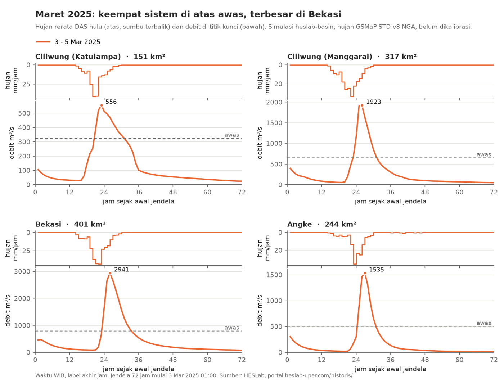

Pada 3 sampai 4 Maret 2025, banjir besar melanda Bogor, Jakarta, dan terutama Bekasi. Tulisan ini menapak tilas kejadian itu dari dua sisi: berita dan catatan resmi saat itu, serta simulasi model HESLab untuk seluruh Wilayah Sungai (WS) Ciliwung-Cisadane. Fokusnya sistem sungai Ciliwung, Bekasi, dan Angke.

Apa yang tercatat saat itu
BMKG mencatat hujan lebih dari 110 mm per hari di Kota Bogor dan hampir 208 mm per hari di Sumur Batu, Bekasi; hujan lokal di Bekasi berkisar 165 sampai 208 mm per hari. BMKG menyebut pertumbuhan awan konvektif skala meso dan sirkulasi siklonik sebagai penyebabnya (Kompas TV).
Urutan kejadian di Bekasi menurut KP2C dan BPBD Kota Bekasi (Katadata):
| Waktu (WIB) | Kejadian |
|---|---|
| 3 Mar 23:00 | Sungai Cileungsi 400 cm, siaga 1 |
| 3 Mar 23:40 | Cileungsi naik ke sekitar 500 cm |
| 4 Mar dini hari | Air mulai masuk permukiman |
| 4 Mar 06:30 | Kali Bekasi mencapai puncak 875 cm (batas 350 cm) |
Debit di Bendung Bekasi disebut mencapai sekitar 1.100 m³/s, melebihi kapasitasnya 1.000 m³/s, sehingga pintu dibuka. Delapan dari 12 kecamatan di Kota Bekasi terdampak. Di Ciliwung, Bendung Katulampa mencapai 150 cm pada 3 Maret pukul 23:00 (RMOL, mengutip UPTD PSDA WS Ciliwung-Cisadane). Banjir berlangsung 2 sampai 6 Maret dengan sedikitnya 9 korban jiwa dan lebih dari 90.000 orang mengungsi (Wikipedia).
Apa kata model
Model HESLab adalah model hujan-limpasan UPerRRM (Universitas Pertamina Rainfall-Runoff Model) yang dijalankan untuk 1641 subDAS di WS Ciliwung-Cisadane, dengan hujan satelit GSMaP Standard v8 per jam. Untuk WS ini model belum dikalibrasi terhadap debit terukur, sehingga besaran debitnya belum tentu tepat. Yang lebih bisa dipercaya adalah urutan waktu dan perbandingan antarwilayah.
| Sistem sungai (titik) | Luas hulu | Hujan 24 jam maks | Debit puncak | Puncak (WIB) | Ruas di atas awas |
|---|---|---|---|---|---|
| Ciliwung (Katulampa) | 151 km² | 202 mm | 556 m³/s | 3 Mar 23:00 | 76 % |
| Ciliwung (Manggarai) | 317 km² | 208 mm | 1923 m³/s | 4 Mar 02:00 | 88 % |
| Bekasi (Kali Bekasi) | 401 km² | 259 mm | 2941 m³/s | 4 Mar 02:00 | 100 % |
| Angke (hilir) | 244 km² | 150 mm | 1535 m³/s | 4 Mar 03:00 | 100 % |
Hujan 24 jam dan persentase ruas dihitung untuk seluruh DAS hulu tiap titik. Ambang awas adalah ambang bawaan model, bukan ambang resmi pintu air.
Tiga hal menonjol:
- Bekasi paling berat. Hujan 24 jam di DAS Kali Bekasi (259 mm) dan debit puncaknya adalah yang terbesar dalam 2015 sampai 2025 menurut model. Di satu subDAS, hujan satu jam mencapai 103 mm.
- Ciliwung juga rekor. Di Manggarai, hujan 24 jam dan debit puncak model sama-sama tertinggi dalam 2015 sampai 2025. Puncak di Katulampa pukul 23:00, jam yang sama dengan laporan 150 cm di bendung itu.
- Hari dengan ruas awas terbanyak. Pada 4 Maret 2025, 1181 dari 1641 ruas sungai melewati ambang awas, terbanyak di antara semua hari 2015 sampai 2025.
Model juga memperlihatkan dua kekurangannya. Puncak Bekasi di model jatuh pukul 02:00, sekitar 4,5 jam lebih awal daripada puncak tinggi muka air Kali Bekasi yang tercatat pukul 06:30. Debit puncak model (2941 m³/s) juga jauh di atas sekitar 1.100 m³/s yang dilaporkan di Bendung Bekasi. Hal ini sesuai dengan status model yang belum dikalibrasi, dan menjadi alasan HESLab mengumpulkan data debit lapangan.
Bisakah diperingatkan lebih awal?
Kejadian yang sama sudah diuji untuk peringatan dini di DAS Bekasi. Dengan hujan GSMaP waktu-nyata (NOW dan NRT) dan UPerRRM yang berjalan terus, debit simulasi menangkap waktu mulai dan naiknya banjir. Ambang Siaga 1 di pos Cileungsi terdeteksi sekitar satu jam lebih awal, dan deteksi hujan di hulu memberi waktu lima sampai enam jam sebelum banjir di hilir (Januriyadi dkk., 2026). Catatan lapangan menunjukkan rentang waktu yang serupa: Cileungsi siaga 1 pukul 23:00, sedangkan Kali Bekasi baru mencapai puncaknya pukul 06:30.
Batasan
- Hujan satelit adalah rerata kotak sekitar 10 km dan dapat berbeda dari pos hujan.
- Debit model belum dikalibrasi. Waktu dan perbandingan antarwilayah lebih bermakna daripada angka debitnya.
- Titik "Bekasi" di model adalah ruas Kali Bekasi paling hilir sebelum saluran CBL, bukan tepat di Bendung Bekasi.
Data per ruas dan per jam pada 4 Maret 2025 dapat dilihat di halaman Historis WS Ciliwung-Cisadane. Perbandingan dengan banjir Tahun Baru 2020 ada di tulisan Banjir 2020 dan 2025 dibandingkan.
Rujukan
Januriyadi, N. F., Moe, I. R., Cikmit, A. A., & Sejati, W. (2026). Utilization of realtime GSMaP satellite data for flood early warning in Bekasi watershed using UPerRRM. International Journal of Disaster Management, 9(1), 38–53. https://doi.org/10.24815/ijdm.v9.i1.377